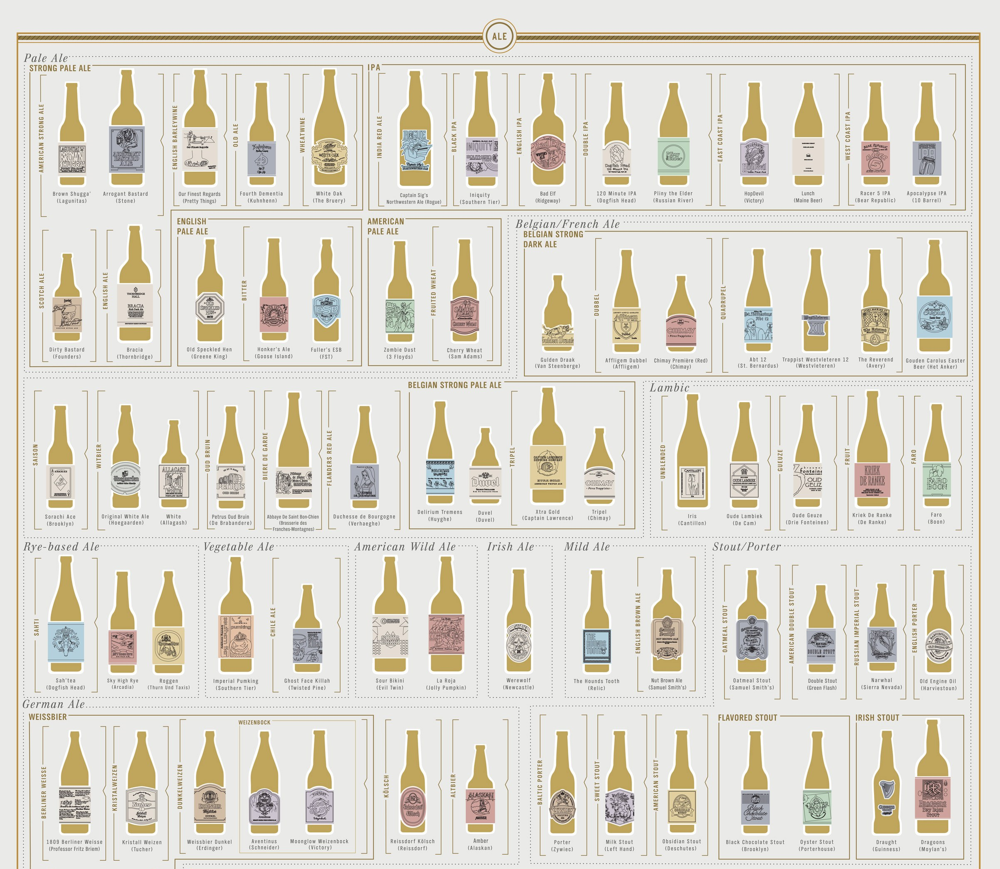

Ales are a variety of beer, denoted by their fruit tones and fuller body. Historically, ales were brewed without hops, but today that is no longer the case. They now are brewed with more hops than normal to give the distinctive fruitiness and bitter taste.
